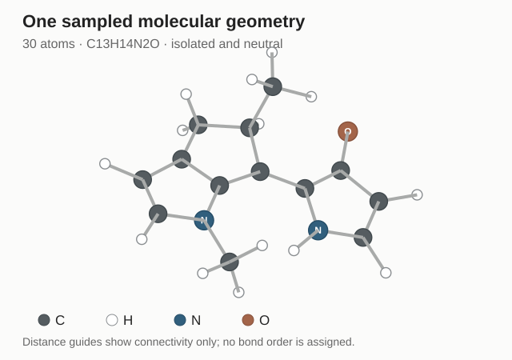
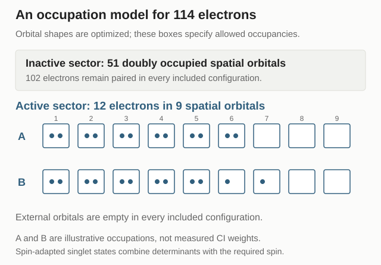
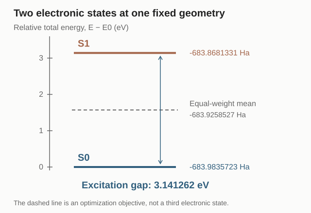

Molecular Excited States — Part I
From VASP to SA-CASSCF
A VASP single-point calculation starts with fixed nuclei and ends with an electronic energy and nuclear forces. A molecular excited-state calculation retains that starting point, but asks for several electronic states of the same molecule. This series follows one actual 30-atom molecular motor, beginning with the calculation that turns a single geometry into two energies, two force vectors, and a nonadiabatic coupling.
The starting knowledge is ordinary ground-state Kohn–Sham DFT: a structure, a basis, an SCF loop, an energy, and forces. The immediate goal is to read the molecular input and its output without confusing an orbital with a many-electron state. Later parts will examine the orbital basis and RHF equations, configuration interaction and CASSCF, derivatives and coupling conventions, and the sampling and machine-learning workflow. The MQC series already explains the subsequent nuclear dynamics; this series supplies the electronic-structure information those equations require.
1. Start with One Frozen Geometry
Imagine extracting a frame from a VASP molecular-dynamics trajectory, writing a POSCAR, and running a static electronic calculation. All nuclear positions are parameters during the electronic solve. Denote their collection by \(\mathbf R=(\mathbf R_1,\ldots,\mathbf R_{N_{\mathrm{at}}})\). A consistent ground-state energy \(E_0(\mathbf R)\) and its derivative supply the nuclear force:
A molecular single-point calculation uses the same separation of tasks. Our example is the motor geometry distributed with the PSiNaD nonadiabatic tutorial, with composition \(\mathrm C_{13}\mathrm H_{14}\mathrm N_2\mathrm O\). It contains 30 nuclei and, at charge zero,
electrons. The calculation discussed here is all-electron. Its electron count therefore comes from the nuclear charges and molecular charge, rather than the valence-electron count of a selected PAW dataset.
The displayed configuration is one sampled geometry of that same motor. Its coordinates are held fixed while the electronic labels are computed. The sampling stage used an xTB Hessian and SHARC Wigner proposals; those proposals supply geometries, while the labels below come from PySCF SA-CASSCF. A proposal geometry is not itself a converged electronic calculation.
Inspect one actual reference geometry

In a VASP calculation with smearing, the printed free energy and the reported zero-smearing energy require a consistent interpretation. The analogy used throughout this article is the fixed-geometry energy-and-force workflow, not a numerical identification of molecular energies with every quantity printed as TOTEN.
2. Separate the Basis from the Electronic Method
Before changing how electron interaction is approximated, identify how an orbital is represented. In a periodic plane-wave calculation, an orbital is expanded in plane waves; ENCUT limits their kinetic energies. In this isolated-molecule calculation, a molecular orbital is expanded in atom-centered Gaussian basis functions:
The first expression is the familiar plane-wave representation of the smooth orbital in a PAW calculation; PAW also provides augmentation information. In the second expression, \(\chi_\mu\) are basis functions centered on nuclei, and \(C_{\mu p}\) are coefficients determined by the electronic calculation. The chosen basis is 6-31g*. Its split-valence functions and polarization functions give the orbitals room to change shape. A later part will unpack that notation quantitatively.
Both approaches use a finite representation, but 6-31G* is not an ENCUT expressed in another unit. Basis convergence follows a family of Gaussian basis sets rather than increasing one plane-wave cutoff. Likewise, changing the basis and changing the electronic method are separate decisions. Molecules can be treated with DFT, and periodic systems can use methods beyond DFT; the distinction here concerns the settings actually used.
| Familiar task | Current molecular calculation | Meaning of the correspondence |
|---|---|---|
| POSCAR: species and positions | XYZ coordinates plus molecular charge and spin | Define the nuclei and electron count. |
| Periodic cell and k-point sampling | Isolated molecule, without crystal k points | Choose the spatial boundary conditions. |
| Plane waves controlled by ENCUT | Atom-centered 6-31G* functions | Choose a finite orbital representation. |
| PAW dataset and exchange–correlation functional | All-electron nuclear charges; RHF reference and SA-CASSCF treatment | Specify core treatment and electronic approximation separately from the basis. |
| Ground-state total energy and forces | Two state energies, two forces, and derivative coupling | Specify what the electronic calculation must return. |
The plane-wave cutoff definition is documented in the VASP ENCUT reference. The table is a functional correspondence, not a one-to-one conversion of input tags.
3. Identify What the SCF Loop Solves
With a basis chosen, the coefficients still have to be determined. In ground-state KS-DFT, a trial density defines an effective potential; solving for orbitals gives a new density; the process is repeated until self-consistency. Restricted Hartree–Fock, or RHF, also iterates orbitals and an effective one-electron operator. It treats exchange through the Hartree–Fock exchange operator rather than a chosen DFT exchange–correlation functional.
SCF names the self-consistent solution process. It is not a synonym for DFT. In a nonorthogonal Gaussian basis the RHF equations have the matrix form
Here \(\mathbf P\) is the density matrix, \(\mathbf F\) is the Fock matrix, \(\mathbf S\) is the overlap matrix, and the columns of \(\mathbf C\) define molecular orbitals. Because the Fock matrix depends on the density constructed from those orbitals, this is a nonlinear self-consistency problem. A closed-shell RHF reference for 114 electrons doubly occupies 57 spatial orbitals.
KS orbitals belong to an auxiliary noninteracting description of the density. RHF instead uses a single Slater determinant as an approximation to the interacting wavefunction. Their similar orbital-solving workflows should not erase this difference. The PySCF SCF documentation describes the HF and KS implementations.
Our jobs perform or reuse a converged RHF reference, then undertake a separate multiconfigurational optimization. For continuation across geometries, the actual CASSCF initial orbitals and configuration coefficients are projected from retained earlier wavefunctions. Freshly converged RHF orbitals are therefore not automatically the CASSCF starting orbitals in this implementation. This is useful to know when reading the logs, but it does not change the distinction between reference SCF and the final electronic method.
4. Ask for Two Total Electronic States
The reference has supplied orbital information, but the requested output is larger: two electronic states of the entire molecule. The difference between an orbital energy and a many-electron energy must therefore be explicit.
At fixed \(\mathbf R\), the nonrelativistic electronic Hamiltonian contains electron kinetic energy, electron–nucleus attraction, electron–electron repulsion, and a constant nuclear repulsion. In atomic units, define
The indices \(i,j\) label electrons and \(A,B\) label nuclei; \(Z_A\) is a nuclear charge. Nuclear repulsion is included in our \(E_I(\mathbf R)\) convention. The electronic eigenproblem is
Each \(\Psi_I\) depends on the coordinates and spins of all 114 electrons. The target \(S_0\) and \(S_1\) are the lowest and next singlet roots in the chosen electronic model, with total spin \(S=0\). They have the same electron number and nuclear geometry. An excited singlet need not have the closed-shell occupation pattern of the RHF reference.
Orbital eigenvalues \(\varepsilon_p\) and total-state energies \(E_I\) are different objects. In VASP, a KS band eigenvalue is not the total energy of the crystal; similarly, a molecular LUMO eigenvalue is not the total energy of \(S_1\). At this fixed geometry the excitation energy is
In general it cannot be replaced by the HOMO–LUMO orbital gap. The interacting excited state includes the response and correlation of the electrons. Changing \(\mathbf R\) and solving again generates a separate potential-energy surface for each root. A vertical excitation compares the two energies at the same geometry; relaxing the excited-state geometry is a further nuclear optimization.
5. Allow More Than One Occupation Pattern
To distinguish correlated electronic states, we need a wavefunction flexible enough to combine different electron occupations. A Slater determinant is an antisymmetrized product of occupied spin orbitals: it specifies one occupation pattern while respecting fermionic exchange. A multiconfigurational wavefunction combines several such patterns, or spin-adapted combinations of them:
The \(\Phi_K\) are configuration basis functions; \(c_{KI}\) are their expansion coefficients for state \(I\). The orbitals are shared in our state-averaged calculation, but the coefficients are different for the two roots. Thus the same orbital set can represent different many-electron states. Full configuration interaction uses all allowed configurations in a specified finite orbital basis. CASSCF restricts that combinatorial problem to an active space and also optimizes the orbitals.
Our input CASSCF(12e,9o) selects 12 active electrons and nine active spatial orbitals. Each spatial orbital has two spin-orbital partners. Within this active space, all configurations compatible with the electron number and selected spin symmetry are available. The remaining electrons are not removed:
The 51 inactive spatial orbitals remain doubly occupied in every allowed configuration. External orbitals are unoccupied in that expansion. “Inactive” constrains occupation; it does not mean their orbital shapes are necessarily frozen. Orbital optimization can rotate the inactive, active, and external subspaces through the permitted nonredundant rotations.

This is an approximation to the molecule. It allows substantial correlation inside the chosen active space, while omitting configurations with inactive holes or external occupations. Solving this model accurately does not make it exact for the complete molecular Hamiltonian. The adequacy of the active orbitals over a photochemical path is a separate scientific question; a successful local calculation does not answer it.
The distinction between CASCI and CASSCF is described in the PySCF MCSCF documentation: CASCI varies configuration coefficients at fixed orbitals, whereas CASSCF also relaxes the orbitals.
6. Optimize Orbitals Shared by Two States
The configuration expansion explains what is varied beyond RHF. The next question is which energy should guide the orbital changes when two roots must be represented together.
For fixed orbitals, construct the Hamiltonian matrix in the configuration basis and solve for two roots:
The matrix depends on the orbitals through one- and two-electron integrals. CASSCF changes those orbitals, which changes the matrix and its eigenvectors, and iterates the coupled problem. In our equal-weight state-averaged calculation, the orbital objective is
The shared orbitals are optimized for that objective, and the individual roots retain their own energies. This reduces a bias toward optimizing the orbital set solely for one target state. It does not mean the molecule was initialized as a physical 50:50 mixture. A later dynamical initial state may occupy \(S_1\), \(S_0\), or a specified superposition; that preparation is a separate choice.
Move the optimization weights, with the energies held fixed

Weighted mean:
The interactive weight above illustrates only the arithmetic \(wE_0+(1-w)E_1\) for the two retained energies. In an actual new state-averaged optimization, changing the weights would generally change the orbitals and both root energies. The widget does not perform that electronic calculation.
This distinction also explains why a line reporting a converged RHF energy is not the end of the job. The multiconfigurational calculation must converge its configuration coefficients and shared orbital optimization. The final labels in this example are SA-CASSCF results, not RHF orbital energies.
7. Obtain Forces and Derivative Coupling
Two energies identify the local electronic gap, but a nuclear trajectory also needs how those energies and states change when the nuclei move. The force on nucleus \(A\) on state \(I\) is
The derivative is a total derivative of the optimized state energy. If \(\boldsymbol\theta\) collects orbital and configuration parameters, the chain rule gives
Constraints and stationarity allow response terms to be reorganized, but they cannot simply all be discarded. Shared orbitals are stationary for \(E_{\mathrm{SA}}\), while an individual \(E_I\) is generally not stationary with respect to those orbital changes. Atom-centered basis functions also move with their nuclei, producing basis-derivative, or Pulay, contributions. The analytic gradient machinery therefore solves a response/Lagrange-multiplier problem. A converged electronic optimization is necessary, but is not itself the completed force calculation.
The additional vector coupling measures the change of the electronic basis with nuclear position. With real, orthonormal states, define our convention as
These are couplings between two many-electron states. They should not be silently identified with couplings between two selected KS orbitals in a carrier-dynamics calculation. Along a prescribed nuclear motion, the contraction \(\sum_A\dot{\mathbf R}_A\cdot\mathbf d_{01,A}\) enters the electronic propagation. The Born–Huang discussion in MQC 0 derives this connection; MQC VIII treats the subsequent trajectory equations.
The public label also contains the energy-gap-scaled off-diagonal coupling
We use this definition consistently, including its sign. Multiplying by the gap changes the units from inverse length to energy per length. For exact differentiable nondegenerate eigenstates in a fixed complete representation, differentiating the eigenproblem and projecting onto the other state yields the familiar off-diagonal derivative relation. Finite basis sets and approximate state-averaged wavefunctions require their own analytic response treatment; the label definition alone does not prove such a calculation exact.
The stored force is the negative gradient. In the full exported \(G\) tensor, the diagonal blocks contain state gradients, while the off-diagonal blocks use the gap-scaled convention above. In particular, \(G_{10}=(E_0-E_1)d_{10}=G_{01}\) for these real states, although \(d_{10}=-d_{01}\). This example uses bare, no-ETF NACs. The PySCF NAC reference documents the available ETF and energy-gap conventions. Overall electronic phases must also be fixed consistently: changing the sign of one state reverses its off-diagonal coupling, without changing that state's energy or force.
8. Read One Completed Calculation
We can now read the actual output in the same spirit as inspecting an energy and force block after a VASP single point. For the displayed motor geometry, the two retained root energies are
Subtracting the two totals gives the fixed-geometry excitation gap, while averaging them gives the orbital-optimization objective:
The digits reproduce the retained numerical output; they are not a statement of molecular accuracy to that many decimals. The electronic calculation used practical convergence settings, including an MC energy threshold of \(10^{-8}\ E_h\) and an orbital-gradient threshold of \(10^{-4}\). No basis-set, active-space, or experimental accuracy claim follows from those thresholds.
For 30 atoms, each state gradient contains \(30\times3=90\) components. The off-diagonal NAC likewise has 90 components. The published sample contains coordinates in angstrom, energies in hartree, forces in hartree per bohr, NACs in inverse bohr, and gap-scaled couplings in hartree per bohr. Gradients are recovered as minus the forces. A reader should therefore be able to identify the following complete label:
This map is the object the electronic-structure workflow supplies. It can be queried directly during a trajectory, or sampled at many geometries to train a surrogate. Here the data establish a completed local label. They do not establish a globally reliable photochemical active space, a converged training set, or a validated HamGNN/NaF trajectory.
9. Inspect the Data and Reproduce the Figures
The compact public example JSON contains the geometry, state energies, forces, and couplings used in the figures. Its units and conventions are included. The accompanying scripts inspect the label and regenerate the static illustrations:
- Inspect energies, forces, electron count, and coupling identities.
- Regenerate the geometry, active-space schematic, and energy diagram.
- Interactive figure source.
These files reproduce the displayed data checks and figures without access to a private workstation. They do not rerun a complete CASSCF electronic optimization. Reproducing a particular multiconfigurational stationary solution also requires the active-orbital preparation and wavefunction initialization; a fresh default active-space choice is not guaranteed to recover the same solution.
The calculation can now be described precisely: choose a geometry and basis; construct or reuse a reference; optimize two correlated singlet roots with shared orbitals; solve the state-gradient and coupling response equations; and retain the resulting physical quantities with consistent units and phase conventions. The familiar single-point structure survives, while the electronic object being solved has expanded.
Sources and related reading
- VASP Wiki: ENCUT — plane-wave basis cutoff.
- PySCF: Self-consistent field methods — HF and KS reference calculations.
- PySCF: Configuration interaction — finite-basis configuration expansions.
- PySCF: Multiconfiguration self-consistent field — CASCI, CASSCF, and state averaging.
- PySCF: State-averaged CASSCF gradients and nonadiabatic couplings — derivative implementations and conventions.
- PSiNaD nonadiabatic tutorial — molecular-system provenance; the present electronic labels use PySCF, rather than the tutorial's OM2/GUGA-CI Hamiltonian. Tutorial at the retained source revision.
Molecular Excited States Series
- I. From VASP to SA-CASSCF — one real fixed-geometry calculation.
Planned next topics are the Gaussian basis and RHF self-consistency, configuration interaction and active-space optimization, state-specific gradients and NACs, and sampling and surrogate-driven dynamics. Each will continue with the same motor rather than changing the example at every step.